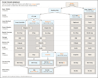

Pick a Kindle
2011-10-31
When I composed my thoughts on the new Kindles awhile ago, one of my concerns was that the lineup was becoming too splintered. Potential buyers might have a hard time knowing which one they want, especially when comparing their options to the relatively straight-forward iPad lineup. This was my attempt to demonstrate the confusion:
 |
| from theunderstatement.com |
{kind=link}
When including Special Offers in the pricing mix, a purchase decision could go something like this: "I want the cheapest Kindle. That's only $79. But, for $109 I could have the same thing without any potentially annoying ads. Buuut, for $99, I could have an even better Kindle and put up with the ads. Or, spend $139 to get rid of the ads. But then, for only $10 more I could add 3G. And add ads. Or wait, maybe I want the one with the keyboard. Same prices as the touch one? Oh. And they're both $189 without ads? Very appealing...but hey! for only $10 more I could have the one that looks just like a little iPad!"
It turns out that Michael Degusta at The Understatement found a visual way to communicate the problem. I've included his chart in this post, but made it too-tiny-to-read, so you'll have to visit Michael's site to see it full-size. It's worth the proverbial thousand words.
Incidentally, and for what it's worth, I'm as excited about the Kindle Fire as I have been for any non-Apple product that I can remember.
Labels: Tech